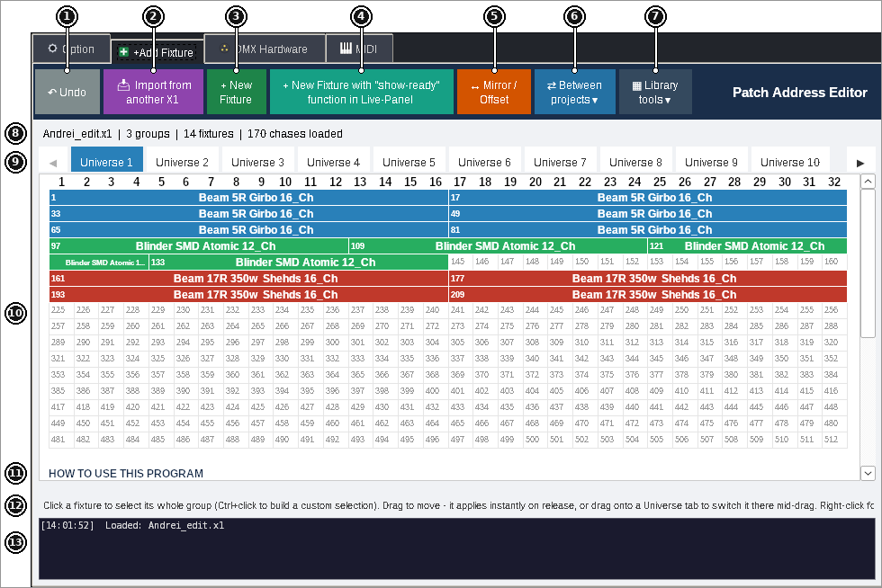
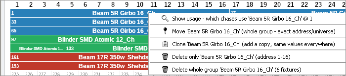

For: Full
The +Add Fixture tab of Setup & Patch is the Patch Address Editor: the 512 addresses of a universe on a grid, with the fixtures of the project on it. Here fixtures are added, moved, cloned and deleted - and what the buttons of the project hold for them goes with them.

The Patch Address Editor with Andrei_edit.x1: universe 1, three groups.
| 1 | Undo - takes back the last change (below). |
| 2 | Import from another X1 - a group of fixtures from another project, with its buttons. See Import from another X1. |
| 3 | New Fixture - adds fixtures from a profile. See Adding new fixtures. |
| 4 | New Fixture with "show-ready" function in Live-Panel - the same, then the new fixtures are written into the buttons the project already has. See Adding new fixtures. |
| 5 | Mirror / Offset - the movements of one group mirrored onto another, or inside the same group, and the pan and tilt moved. See Mirror / Offset. |
| 6 | Between projects - movements, dimmers and dimmer games taken from another project. See Between projects. |
| 7 | Library tools - the Fixture Filter and the LumiDMX Fixture Editor. See Library tools. |
| 8 | The project - its file, how many groups, fixtures and chases it has. |
| 9 | The universes - one tab for each of the 16; the triangles at the two ends show the ones that do not fit (grey when there are no more that way). |
| 10 | The grid - the 512 addresses of the universe, 32 in a row. Each fixture is a bar from its first to its last address, with its name and its first address; each group has its colour. The free addresses show their numbers. |
| 11 | HOW TO USE THIS PROGRAM - a short help, under the grid (scroll down). |
| 12 | The hint - the help in one line. |
| 13 | The log - every change, with its time: fixtures added, moved, cloned, deleted, imported, and what Undo took back. |
A click on a fixture selects its whole group. Ctrl+click adds a single fixture to the selection or takes it out - a selection of your own, for example to split one group over two universes.

The right click on the first fixture of the group Beam 5R Girbo 16_Ch.
| Command | What it does |
|---|---|
| Show usage | Lists the chases and the Live panel buttons that use this fixture (where its values are not all 0), with their steps - or says that it is not used and is safe to delete or move. Worth a look before deleting or moving. |
| Move 'group' | Asks for the New universe and the New start address of the whole group, and moves it there at once, as a drag. |
| Move current selection | The same for the fixtures selected with Ctrl+click (when there are several). |
| Clone 'fixture' | Adds a copy of the fixture - the same profile - at the universe and start address you give. Every chase and button gets for the copy the same values it has for the fixture it was copied from, and the sliders that control the fixture control the copy too. With several fixtures selected, Clone current selection copies them together and keeps their spacing. |
| Delete only 'fixture' Delete whole group | Asks first. Then every chase (Live panel button) is searched: the values of these fixtures are cleared in each step, and a step left with no other fixture in it is removed completely. The fixtures leave the patch. |
The moves, clones and deletes carry the buttons with them: a moved fixture keeps everything the buttons hold for it at its new address.
Tip: the addresses in the patch must be the ones set on the fixtures themselves. After moving a fixture here, set the same start address on the fixture (its display or its DIP switches).